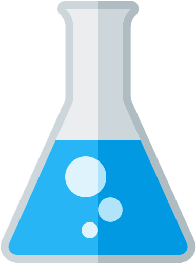

chimicaOnline
Home
Articoli
Contatti
Informazioni
Informazioni
Il sito web è stato creato con lo scopo di espandere a più persone possibile lo studio della chimica.
Tale materia viene infatti considerata complessa in ogni suo aspetto anche se, con una maggiore predisposizione allo studio causata dalla voglia di mettersi in gioco, arriverà ad essere una delle tematiche di studio preferite di tutti.
Il redattore
Piacere, sono Alex, relatore e creatore del sito web. Frequento il liceo scientifico con il potenziamento delle scienze a Torino.
Ritengo la chimica una delle materie scolastiche che preferisco; riconosco però che per molti tale materia risulti essere complessa.
In questo blog cercherò di espandere al più alto numero di persone la mia passione per la chimica tramite spiegazioni ed esercizi svolti.
website info
Il sito web è stato creato in HTML, sfruttando il CSS ed alcuni JAVASCRIPT.
Per una migliore visione consiglio l'uso di computer montanti schermo di risoluzione 16:9 o 16:10; chiedo inoltre, per quanto possibile, di limitare l'uso di abblocker.
I font utilizzati sono
Liberation Mono
Pacifico
.